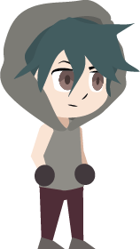

Rebel
"Rules are meant to be broken"
The Rebel stands out against the injustice in the system they live in. Whether they are fueled by the desire for freedom or revenge, they aim to overturn what's not working. They achieve this by disrupting or destroying the system, causing shock to the opposition. Because they fear being powerless or ineffectual, they risk taking dark turns and committing crimes. Regardless, Rebels let the audience discover the ability to question things.
Also known as:
- Misfit
- Outlaw
- Revolutionary
- Iconoclast
- Anti-Hero
Qualities
- Resilience
- Resourcefulness
- Inspirational
Flaws
- Lack of Power
- Status
- Resources
- Dark Turns
- Crime